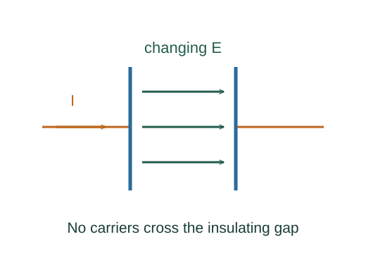

Why Maxwell added displacement current
A charging capacitor exposes a problem with the magnetostatic Ampère law: different surfaces spanning the same loop can intercept different conduction currents. The changing electric flux supplies the missing term.
What the symbols mean
ΦE: electric flux through the chosen surface; Idisplacement = ε₀dΦE/dt in vacuum; Iconduction: actual charge transport through it.
When this applies
Vacuum Maxwell equations. The parallel-plate example neglects fringing and uses a quasistatic charging geometry.

Span the same loop in two ways
One surface cuts the capacitor lead and intercepts conduction current I. Another bulges into the gap and intercepts no wire current. The circulation around the shared boundary must be the same.
Compute the gap electric flux
For plates of area A with charge Q, E = Q/(ε₀A). The flux through the gap cross section is therefore Q/ε₀.
Go deeper at this stepDerive the capacitor fieldDerive parallel-plate capacitanceDifferentiate the flux
Multiplying its time derivative by ε₀ gives exactly dQ/dt, the current in the lead. This restores agreement for the two chosen surfaces.
State the general field law
Maxwell’s addition applies to changing electric fields generally, including vacuum regions with no conduction. The capacitor argument motivates its form but is not by itself a complete derivation of all electrodynamics.
Where each equation comes from
Derived equations link to an argument below. Definitions, physical postulates and constitutive models are identified as the inputs of that argument.
Derivation of the main resultDerived result
Conditions: Vacuum Maxwell equations. The parallel-plate example neglects fringing and uses a quasistatic charging geometry.
- Span the same loop in two ways. One surface cuts the capacitor lead and intercepts conduction current I. Another bulges into the gap and intercepts no wire current. The circulation around the shared boundary must be the same.
- Compute the gap electric flux. For plates of area A with charge Q, E = Q/(ε₀A). The flux through the gap cross section is therefore Q/ε₀. Explain the equation used in step 2 ↗ Derive the capacitor field ↗
- Differentiate the flux. Multiplying its time derivative by ε₀ gives exactly dQ/dt, the current in the lead. This restores agreement for the two chosen surfaces. Explain the equation used in step 3 ↗
- State the general field law. Maxwell’s addition applies to changing electric fields generally, including vacuum regions with no conduction. The capacitor argument motivates its form but is not by itself a complete derivation of all electrodynamics. Explain the equation used in step 4 ↗
Equation in step 2Derived result
What is being shown: Compute the gap electric flux
For plates of area A with charge Q, E = Q/(ε₀A). The flux through the gap cross section is therefore Q/ε₀.
Starting conditions and inputs: Vacuum Maxwell equations. The parallel-plate example neglects fringing and uses a quasistatic charging geometry.
Equation in step 3Derived result
What is being shown: Differentiate the flux
Multiplying its time derivative by ε₀ gives exactly dQ/dt, the current in the lead. This restores agreement for the two chosen surfaces.
Earlier results used in this argument:
- ΦE = EA = Q/ε₀ (Derived result)
Equation in step 4Derived result
What is being shown: State the general field law
Maxwell’s addition applies to changing electric fields generally, including vacuum regions with no conduction. The capacitor argument motivates its form but is not by itself a complete derivation of all electrodynamics.
Earlier results used in this argument:
- ΦE = EA = Q/ε₀ (Derived result)
- ε₀dΦE/dt = dQ/dt = I (Derived result)
A worked example
If a parallel-plate capacitor is charging at 2 mA, its ideal full-gap displacement current is also 2 mA even though charge carriers do not cross the vacuum gap.
Derivation behind this calculation ↗A point to keep straight
Displacement current is a field term with current units; it is not ordinary charged particles travelling through empty capacitor space.
Check the assumptions and derivation ↗